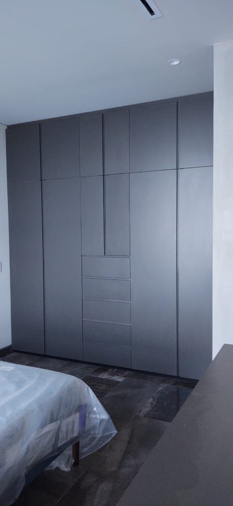
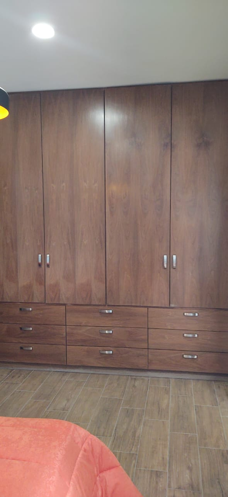
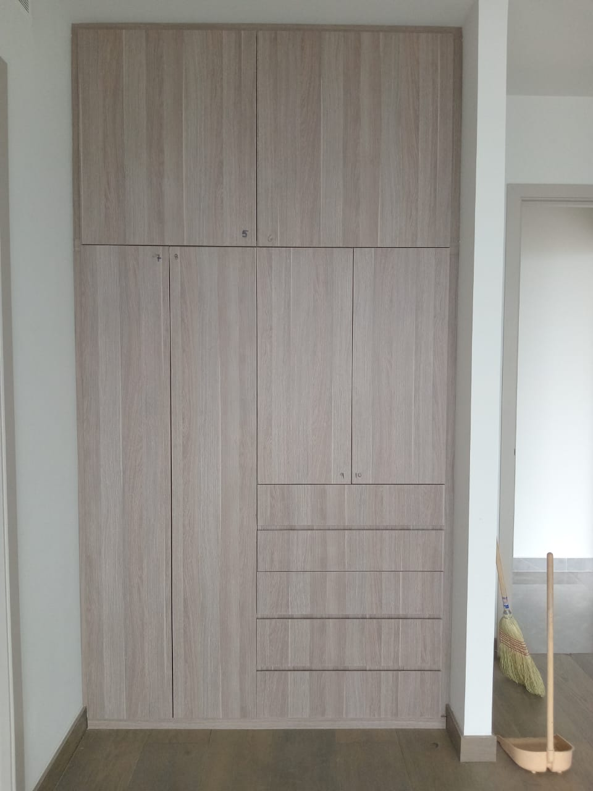
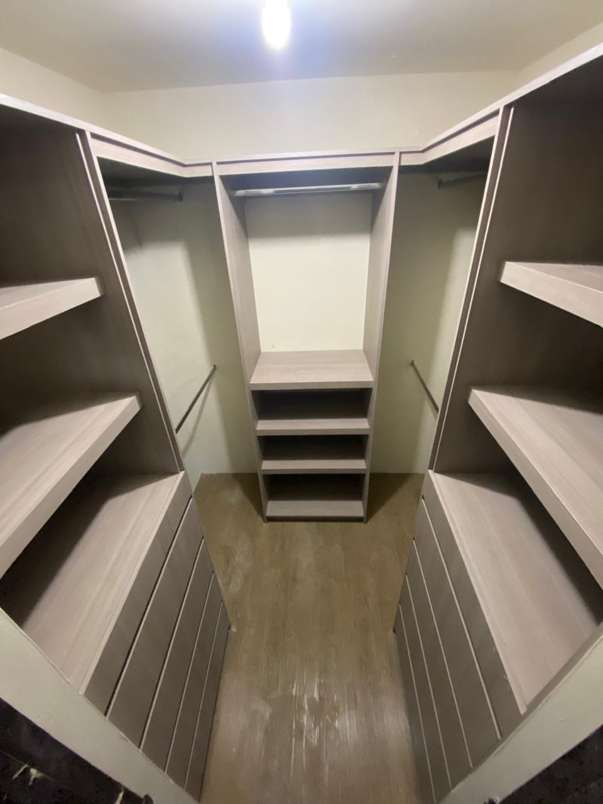

Closet empotrado en acabado gris
Diseño de piso a techo con puertas lisas, cajoneras centrales y distribución integrada para aprovechar completamente el espacio.
Diseños personalizados para aprovechar al máximo cada espacio de almacenamiento.

Diseño de piso a techo con puertas lisas, cajoneras centrales y distribución integrada para aprovechar completamente el espacio.

Closet amplio con puertas superiores, múltiples cajones inferiores y acabado cálido tipo madera.

Diseño en acabado madera clara con puertas de gran formato y cajones integrados para mantener una apariencia limpia y moderna.

Vestidor personalizado con repisas, áreas para colgar ropa, cajoneras y módulos distribuidos para facilitar la organización.